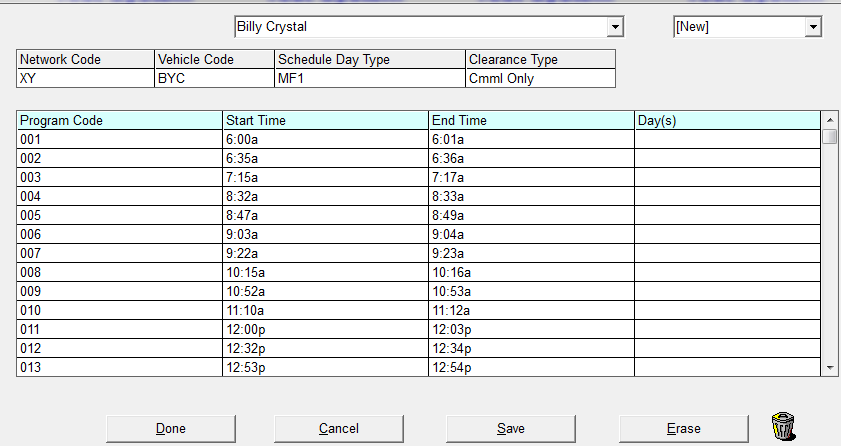

RADAR Export
The Affiliate Radar Export generates a file that is sent to RADAR which is used for advertiser clearance information. The file contains the program schedule information, plus the actual air time and day of the spots within a specified week.
Setup
Every vehicle that is exported to RADAR has program schedule information. The schedule determines which affiliate spots are included in the Radar export by checking the feed time and feed day against the RADAR Program Schedule.
Traffic Site Options
Activate the RADAR Export in the Traffic -> Lists -> Site -> Options tab. You will need a password from support@counterpoint.net.
Affiliate
User Options
Activate the RADAR Export in the User Options->Job screen by setting RADAR to green for each user that can define the Radar Program Schedule.
Affiliate Site Options
Version 7.1 and above: in Affiliate Site Options, on the Options tab, determine how the Radar export setting should be set. The available options are “multi-airplay by Spot ID”, “multi-airplay by Program Code”, and “By Air Time”. When the Spot ID option is selected, multiple air plays of a single spot will result in the air play count getting incremented on the Radar export (this is the method used on version 7.0 and earlier). When the Program Code option is selected, on the Radar export, spots with the same program code (as defined on the Radar screen) that air in different breaks will result in the air play count getting incremented as if they were repeated air plays of a single spot, whether they are a single spot or not. When the Air Time option is selected, the data will be exported by air time, and the air time will be used to set the air play count and break position. For a complete explanation of the Air Time option, see the Air Time section below. The Program Code and Air Time option is only available on version 7.1 and above.
Affiliate Agreements
You can enter the Clearance Type while defining the RADAR Schedule, or you can indicate the Clearance Type in the Agreement Screen. When defined in Agreements, it will override the Radar Clearance Type specified within the Radar Program Schedule.
- Cmml Only: Commercials only are broadcast for the RADAR export
- Prog + Cmml: Commercials are broadcast within a program for the RADAR export
- Schd: This choice will use the Clearance Type defined in the RADAR Program Schedule screen
- Exclude: This will exclude the station from the RADAR export
RADAR Program Schedules
Define the program schedule information agreed upon for the show. The program schedule format is between your Network and RADAR.
There are two ways to enter the RADAR program schedule: individually by vehicle, or modeling from a pre-defined program schedule.
Click the RADAR button to define your schedule.
If program schedules have been previously defined for any shows, a "Model" box will appear. This allows you to select the show to model from their existing schedule format.
If no schedules exist, or you do not wish to model, select OK without choosing any show.
Select the vehicle for which you wish to define a schedule for the dropdown, and select New from the dropdown in the upper right corner.

Network Code
The Network code is a Two (2) Character code used to identify the network to RADAR. It is determined between the Network and Radar.
Vehicle Code
The Vehicle code is used to identify the vehicle within the Network to Radar. This can be a two or three character code.
Schedule Day Type
The specified times and days in the Radar Program Schedule are independent of any Agreement Pledge Times. These times indicate the times of the airing spot to be extracted to Radar for reporting purposes. This field defines how the Days field will be filled. The choices are:
- MF1 - For a Monday-Friday ROS program schedule
- MS1 – For a Monday-Sunday ROS program schedule
- Day Name – If selected, you need to enter the specific extraction day(s) in the schedule
Clearance Type
This is used to indicate the type of clearance information.
- Cmml Only: Is used for a commercial only Broadcast, no program is aired for all stations
- Prog + Cmml: Is used when commercial(s) are broadcast within a program for all stations
- Agreement: Uses the information that is defined in the station agreement for this vehicle to determine the Clearance Type
Program Code
Enter the three-character (maximum) program code (i.e. 001, 002,…). This code will be agreed upon between the network and RADAR.
Start Time
Enter the extraction start time in Eastern time zone (HH:MM:SS a/p). These specified times are independent of any agreement pledge times. They indicate the times the airing spots are to be extracted and sent to RADAR.
End Time
Enter the extraction end time in Eastern time zone (HH:MM:SS a/p).
Day(s)
You only need to enter the specific extraction days if Schedule Day Type is by Day Name
Export Selectivity
- Clearance Start Date: Enter the Clearance Start Date requested by Radar. This must be a Monday
- Output Format: Select either Prn, CSV or both to export file
- Intention Week Declaration: If a station(s) is not affiliated with a Vehicle during the clearance week, the Network is to supply data for those stations based on an alternate week of the station’s affiliation during the survey period, which is agreed upon between the Network and Radar. In addition, the Network should provide Radar with a commercial schedule for each non-standard clearance week for which the Network is supplying data
- Specified Week on Daylight-Saving Time: Indicates if the clearance week is in daylight saving time. If you do not make a selection the system will automatically choose standard daylight
- Radar #: This is used to indicate the Radar assigned number for the clearance week. This number is agreed upon between the Network and Radar
- Max # of Spots per break to Export (Blank = All): This controls the number of times a spot is shown within a single break. This defaults to 2
- Max # of Times Same Spot Exported: This controls the number of times a spot is shown if the Air Play number for a spot is high. This defaults to 6. This value must be greater than 0. If value is 0, a warning message stating “Max # of times same spot exported must be specified (1-99)” will appear
- Network Codes: These are the Network codes defined in the Radar Program Schedules. You can select all Networks or individual Networks, by clicking on the specific network code you want
- Vehicle Codes: These are the Vehicle codes defined in the Radar Program Schedules. If you select an individual Vehicle Code, an additional box will open displaying the stations
If spots are not fully posted for this Vehicle it will indicate it in the Results screen
Click the Export button and a path indicating the file’s location will appear in the bottom left corner.
Export File Name
The RADAR export file name is: Rx-nn-yy-zz.prn (or.CSV)
- R is constant
- x= RADAR #
- nn=Network code
- yy-zz=Month (1-12) Monday day (1-31) of the Clearance week
- Prn is constant. The naming structure of the PRN file is as follows “R3-07-1-12.Prn” which reads :
- R is Constant, 3 = Radar #, 07 = Network Code, 1 = the month, 12 = day ( Monday start) Prn is constant
- The naming structure of the CSV file is as follows R3-07-1-12.CSV which reads :
- R is Constant, 3 = Radar #, 07 = Network Code, 1 = month, 12 = day (Monday start) CSV is constant.
RADAR Export CSV definitions
|
Radar Character |
Definition |
|
A |
RADAR Network code |
|
B |
RADAR Program code |
|
C |
Spot position in break defined by a letter |
|
|
A for first spot |
|
|
B for second spot |
|
D |
Number of times the same spot repeated (caused from load factor and/or from selling to airing mapping) |
|
|
Blank for First time spot appears |
|
|
S for second time spot appears |
|
|
T for third time spot appears |
|
|
4 for 4th time spot appears |
|
|
5 for 5th time spot appears, etc. |
|
|
Limiting factor is "Max # of times same spot exported" |
|
E |
Call letters plus band |
|
F |
Two fields in one |
|
|
The first is the affiliate time zone (E, C, M or P) |
|
|
The second if Daylight Saving (D) or Standard time (S) for the clearance week |
|
G |
Program schedule day definition (MF1, MS1, MON, TUE,..,SUN) |
|
H |
Program schedule and/or agreement Clearance type |
|
|
X not to air |
|
|
P air program and commercials |
|
|
C air Commercials only |
|
I |
Intention indicator |
|
|
Blank indicates spot from clearance week |
|
|
I indicates that spot from intention week |
|
J |
Air Time if clearance type is P or C otherwise blank |
|
K |
Air Day if clearance type is P or C otherwise blank |
|
|
(MON, TUE,...,SUN) |
|
L |
RADAR Vehicle code |
Affiliate Updating
To facilitate the updating of affiliated stations electronically, Radar had developed a Windows compatible software program called AUS (Affiliate Update System). Networks use the AUS system to revise affiliate start and end dates from a database of affiliates. The data of files is then forwarded to Radar periodically by the contract specified dates to update their data. In turn they will create a new set of database files reflecting all updates and call letter changes, and return it to the Network to use for the next period update.
When Radar has completed the updating of the Network station file, Radar sends each Network a copy of this final list of affiliated stations.
Radar Clearance Report
The Radar Clearance report indicates which minutes of inventory are parts of which Radar network for any given Radar vehicle, based on the Radar Table. This report includes vehicle, station, date and time aired, advertiser & product, ISCI, spot length, status, and the RADAR 2-character network code.
Radar Export by Air Time
When running the Radar export with the “Air Time” setting enabled in Site Options, special rules are used to set the “Spot Position” value and the “# Times the Same Spot Airs”, so the output varies from the Spot ID and Program Code method. The following rules are used:
1. If there's more than one spot with the same HH:MM A/P air time (for the station, vehicle, and date), then the "Spot Position value" (column 3) gets incremented starting at A, then B, etc.
Example: two spots with an 8:59a air time, one is A, the other is B, because the air time (excluding seconds) is the same.
2. For the "# times same spot airs" (column 4), starting with the spot with the earliest air time for the day (for a station, vehicle, and date), it has a 1, then 2 for the spot with the next earliest air time, and so on. If there's more than one spot with the same air time (and for the same station, vehicle, and date), then they will have the same "# times same spot airs" value.
Example: two spots with an 8:59a air time, both will have a 1 because the air time is the earliest spot of the day and the air times are the same so they’re both 1. The next spot has an air time of 9:03a, and it will be number 2, and so on, for the rest of the day for that station/vehicle/date.
3. The data is exported by air time instead of by feed time.
4. For spots that didn't air, the pledge time is used as the default air time, so effectively the pledge time will be used for setting column 3 and 4 for spots that didn't air.